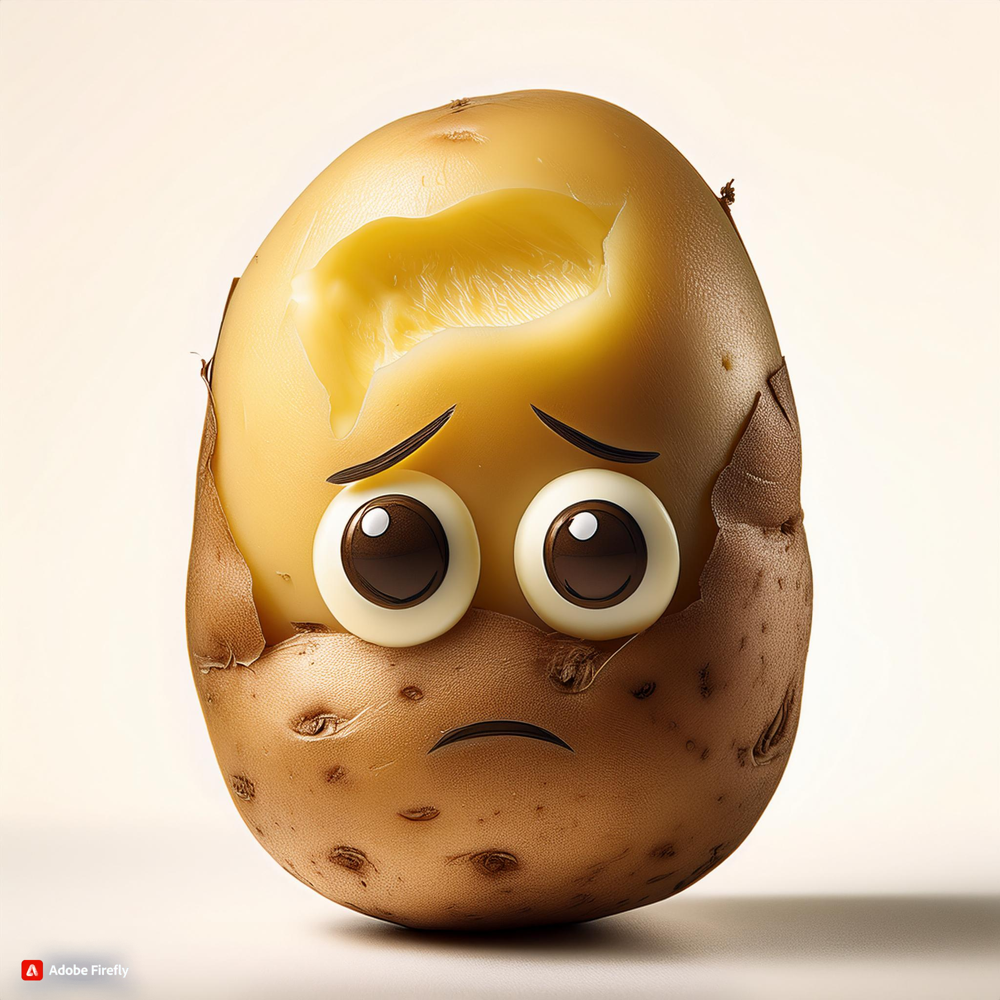
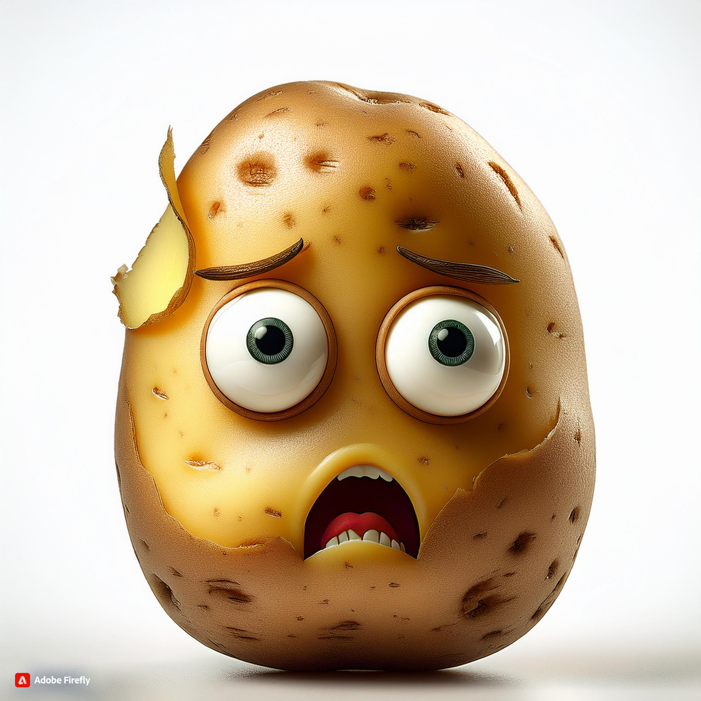
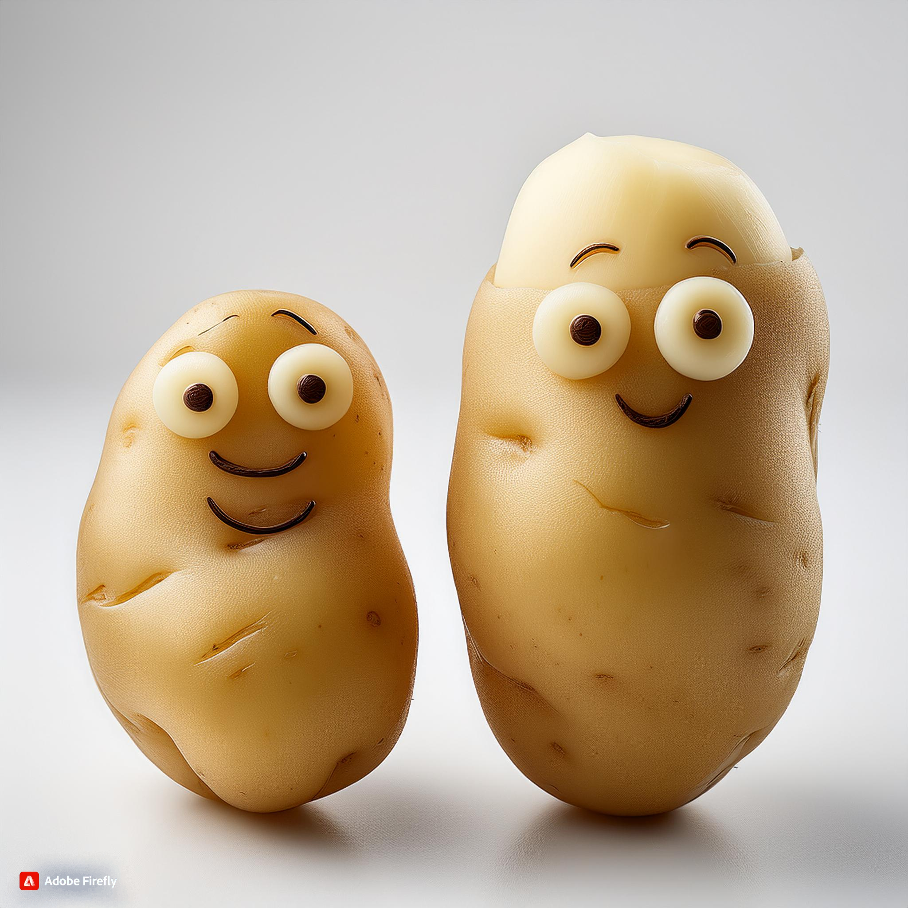

What Is Potato? (Mujhe chhuwo Na 🙈)
The potato is a starchy root vegetable native to the Americas that is consumed as a staple food in many parts of the world. Potatoes are tubers of the plant Solanum tuberosum, a perennial in the nightshade family Solanaceae. Potato. Potato cultivars appear in a variety of colors, shapes, and sizes.
Here are some characteristics of potatoes:
- Plant
- Potatoes are a member of the nightshade family (Solanaceae) and are native to the Peruvian-Bolivian Andes. Potato plants can grow up to 1 meter tall and have hairy stems and leaves. The flowers can be white, pink, purple, or blue with yellow centers.
- Tuber
- Potatoes are tubers, which are organs that some plants use to store nutrients. The edible root of the potato plant forms a tuber that can be a range of colors, sizes, and shapes.
- Food
- Potatoes are a staple food in many parts of the world and are a popular ingredient in many national and regional cuisines. They are often served whole or mashed, but can also be ground into flour for baking or used as a thickener for sauces
- Nutrition
- Potatoes are a rich source of starch, vitamins, and minerals. They are highly digestible and contain vitamin C, protein, thiamin, and niacin.
- Other uses
- Potatoes are also used for industrial purposes, such as the production of starch, alcohol, dextrin, and glucose. Potato starch is used in laundries and for sizing yarn in textile mills.
What is Nanga Potato (Firse Chhuwo Na 👉👈)
The Nanga Potato, or "Naked Potato," is a peeled potato stripped of its natural earthy coat, revealing a smooth, exposed surface ready to absorb flavors and cook quickly. Without its skin, the Nanga Potato excels in dishes where texture is key, like mashed potatoes, purees, and soups. Its vulnerability makes it versatile and easy to work with, adapting to various cooking methods while embracing seasonings effortlessly
The Saga of the Nanga Potato: A Naked Hero in the Kitchen
Ah, the potato—beloved by all and king of comfort foods. But what happens when this humble spud sheds its rugged exterior? Enter the Nanga Potato—the bold, bare, and brimming-with-potential star of countless dishes. Whether it's mashed, fried, boiled, or baked, the Nanga Potato takes center stage in kitchens worldwide, proving that sometimes, you don’t need to dress up to impress!
Why GO Nanga
Let’s be honest—there’s something magical about a Nanga Potato. Without its earthy jacket, it reveals a soft, smooth, and versatile side, ready to blend into soups, turn into fluffy mash, or crisp up as golden fries. But there’s more than just a pretty surface to this stripped-down spud:
- Easier to Cook: The Nanga Potato doesn’t need any fancy treatments. It’s quick to boil, fries evenly, and absorbs flavors better than its clothed counterpart. It’s like a sponge for deliciousness.
- Less Grit, More Goodness: When your potato goes Nanga, you don’t have to worry about scrubbing off dirt or biting into an unexpected speck of grit. It’s smooth sailing (or eating!) from the start.
- Versatility: The Nanga Potato can shapeshift in ways its clothed cousin only dreams of. From velvety mashed potatoes to the perfect gnocchi, it’s the go-to ingredient when you want to get serious in the kitchen.
Nanga Potato: A Nutrition Powerhouse?
While peeling away the skin does strip some fiber and nutrients (sorry, Nanga Potato), it’s still a decent source of vitamins C and B6, along with potassium. Plus, it’s an excellent source of carbs—because who doesn’t need a little extra energy for life’s adventures? After all, even a Nanga Potato can still pack a punch.
How to Handle Your Nanga Potato
Here are some ways to treat your Nanga Potato like royalty:
- Mash it up: With nothing to hold it back, the Nanga Potato transforms into the fluffiest, creamiest mashed potatoes. Just add butter, cream, and a pinch of salt, and you’ve got yourself a side dish that steals the show.
- Fry it right: Nanga Potatoes love oil! Whether in the form of French fries, hash browns, or potato chips, their peeled surface gets crispier and more flavorful in hot oil. Pro tip: double-fry for that extra crunch!
- Boil with purpose: For salads or soups, the Nanga Potato is perfect because it absorbs seasoning more readily. Plus, it cooks faster, so you can whip up your favorite dishes in no time.
- Roast it to perfection: A Nanga Potato roasted with olive oil, rosemary, and garlic? Heavenly. The naked spud’s soft interior and crispy exterior make it the perfect addition to any roast dinner.
Nanga, Bold, and Beautiful
So, next time you peel a potato, don’t think of it as stripping away the good stuff. Instead, appreciate the naked beauty of the Nanga Potato. It’s versatile, nutritious, and, let’s face it, it’s the star of countless dishes we know and love. Being Nanga never looked so good!
What Is Assaulted Potato? (Ek Baar Aur Na 🤤)
The Assaulted Potato refers to a peeled potato that has gone through the culinary wringer—peeled, chopped, boiled, fried, or roasted. This spud has faced the heat (literally), emerging as the hero of many dishes. It may have lost its protective skin, but this "assault" reveals a softer, more versatile interior perfect for soaking up flavors, crisping in oil, or blending into smooth, creamy textures.
The Assaulted Potato: Bruised, Battered, But Unbeatable
Let’s talk about a spud that’s been through some tough times—the Assaulted potato. Stripped of its protective skin, poked, prodded, and boiled, this is a potato that’s seen things. Yet, despite its rough treatment, the Assaulted Potato emerges victorious, becoming the foundation of some of the world’s most beloved dishes.
Why Assault the Potato?
Sometimes, you have to get a little tough to bring out the best. The Assaulted Potato might look like it’s been through a battlefield, but that’s just the beginning of its culinary transformation. Here’s why we put this spud through its paces:
- The Perfect Blank Canvas: Without its armor, the Assaulted Potato is ready to absorb every seasoning, spice, and sauce you throw at it. You want butter? It soaks it up. Garlic? Absolutely. Cheese? Bring it on.
- Smoother Texture: Once you’ve peeled the potato, it's easier to achieve that perfect, smooth texture in mashed potatoes, soups, or creamy gratins. The skin just gets in the way of the smoothness we're after.
- Quicker Cooking: Assaulted Potatoes don’t waste time. Without their peel, they cook faster and more evenly. No more waiting around for your potatoes to boil or roast!
The Assaulted Potato’s Nutritional Punch
Now, we all know the skin of a potato holds some fiber and nutrients, but let’s not sell the Assaulted Potato short. Even after all the peeling and chopping, it still contains potassium, vitamins C and B6, and plenty of energy-boosting carbohydrates. Plus, once you start mashing in butter and cream, who’s thinking about fiber anyway?
How to Best Utilize Your Assaulted Potato
After this potato's been through the wringer, it deserves a proper showcase. Here’s how to make the most of your battered, peeled friend:
- Creamy Mash Madness: The Assaulted Potato shines in mashed form, especially when you go full throttle with butter, milk, or cream. After everything it's been through, it's ready to give you the fluffiest, smoothest mash you’ve ever had.
- Assaulted and Fried: Frying is where this potato gets its revenge. Whether as fries, chips, or hash browns, the crisp outer layer of a fried Assaulted Potato is like a crunchy shield, with a soft, tender center that proves it’s still got fight left in it.
- Roasted and Toasted: A proper roast is the perfect redemption arc for the Assaulted Potato. Tossed in olive oil, seasoned, and roasted until golden brown, this once-beaten spud transforms into crispy-on-the-outside, soft-on-the-inside perfection.
- Soup Support: After all its trials, the Assaulted Potato proves it's the perfect thickening agent for soups and stews. Blended into a creamy potato soup or added to chunky stews, its flavor and texture are a comfort to the soul.
conclusion: The Survivor of the Kitchen
Sure, we’ve peeled, boiled, and fried the life out of this potato, but the Assaulted Potato never backs down. It may have been stripped of its protective skin, but it emerges stronger, tastier, and more versatile than ever. So next time you’re peeling a potato, remember—you’re not just taking away the skin, you’re unleashing its full potential
With this tongue-in-cheek approach, the Assaulted Potato becomes a hero in your kitchen, beaten but never defeated!
The Tale of the Nanga and Assaulted Potato: A Story of Sheer Survival (Bas Last Baar Chhudo 😘)
Once upon a time in the kitchen, there lived two kinds of potatoes—those content in their thick, earthy coats and those stripped down, bruised, and battered, yet still standing proud. These brave spuds, known as the Nanga Potato (the naked potato) and the Assaulted Potato (the peeled potato), have endured rough times to become the true heroes of countless recipes.
Why the Nanga Potato Goes Naked?
The Nanga Potato, freshly peeled and stripped of its rugged exterior, is more than just a shy spud hiding without its skin. Going nanga gives the potato a new kind of power. Freed from its earthy shell, it becomes soft, versatile, and ready to embrace any flavor you throw its way. The Nanga Potato says, "I may be exposed, but I am here to deliver flavor, texture, and satisfaction."
- Flavors Sink In: Naked and unprotected, the Nanga Potato absorbs flavors like a sponge. Whether it’s butter, garlic, or a dash of herbs, this spud is all about blending in and taking on the personality of your dish.
- Smoother Textures: Without the rough edges of its skin, the Nanga Potato becomes the king of smooth, creamy textures. Perfect for mashing, blending, or pureeing—it’s like velvet in your mouth!
- Quick to Cook: Nanga Potatoes waste no time! Without the tough exterior, they cook faster, making them a busy cook’s best friend. Less peel, less waiting.
The Assaulted Potato: Battle-Ready
Meanwhile, the Assaulted Potato is not just a peeled potato—it’s one that has been through a lot. Peeled, chopped, boiled, and sometimes even fried to a crisp, this potato knows what it means to take a hit. Yet, it’s stronger for it. After facing these kitchen assaults, it proves to be a versatile champion.
- Endures All Cooking Methods: Whether it’s boiling for a smooth mash or frying up for some crispy golden fries, the Assaulted Potato has been through it all. Each cut and cook only makes it better.
- Texture Champion: After the peeling, the Assaulted Potato may feel naked and vulnerable, but what it lacks in skin, it makes up for in texture. Whether soft and creamy or crispy on the outside, it’s ready to deliver a perfect bite.
- Ready for a Flavour Assault: If you want to drench your potato in cheese, gravy, or butter, the Assaulted Potato is ready to take it on. With its tender, exposed surface, it soaks up all the goodness without hesitation.
Nanga Meets Assaulted: A Perfect Culinary Duo
Now, what happens when the Nanga Potato and Assaulted Potato meet? A true culinary partnership is born! These two are different sides of the same coin, each offering unique qualities that elevate your dish:
- Creamy Mashed Potatoes: The Nanga Potato, having been peeled down to its smooth core, joins the Assaulted Potato for a soft, fluffy mash. Together, they create a texture so perfect, you won’t even remember the peeling part.
- Fries and Chips: When it comes to frying, these peeled comrades excel. Once assaulted by the hot oil, they turn into crispy fries or chips, offering that perfect golden crunch with a tender inside.
- Soups and Stews: Whether they’re blended into a velvety soup or used as the star of a chunky stew, the Nanga and Assaulted Potatoes both shine. Their exposed, peeled surface allows them to break down beautifully in broths, thickening the dish and absorbing every bit of flavor.
The Resilient Duo
So, whether your potato is standing proudly nanga or has been through the assault of peeling and cooking, both bring something special to the table. The Nanga Potato offers simplicity and speed, while the Assaulted Potato shows resilience and adaptability. Together, they are the foundation of comfort foods, ready to satisfy your cravings no matter how you cook them.
Conclusion: Embrace the Naked and Bruised Potatoes
Next time you're in the kitchen peeling potatoes, don’t just think of them as stripped down or battered. Think of them as the Nanga and Assaulted Potatoes—brave spuds that have shed their skins and endured the heat, ready to make your dishes extraordinary. These potatoes aren’t just peeled—they’re culinary warriors!